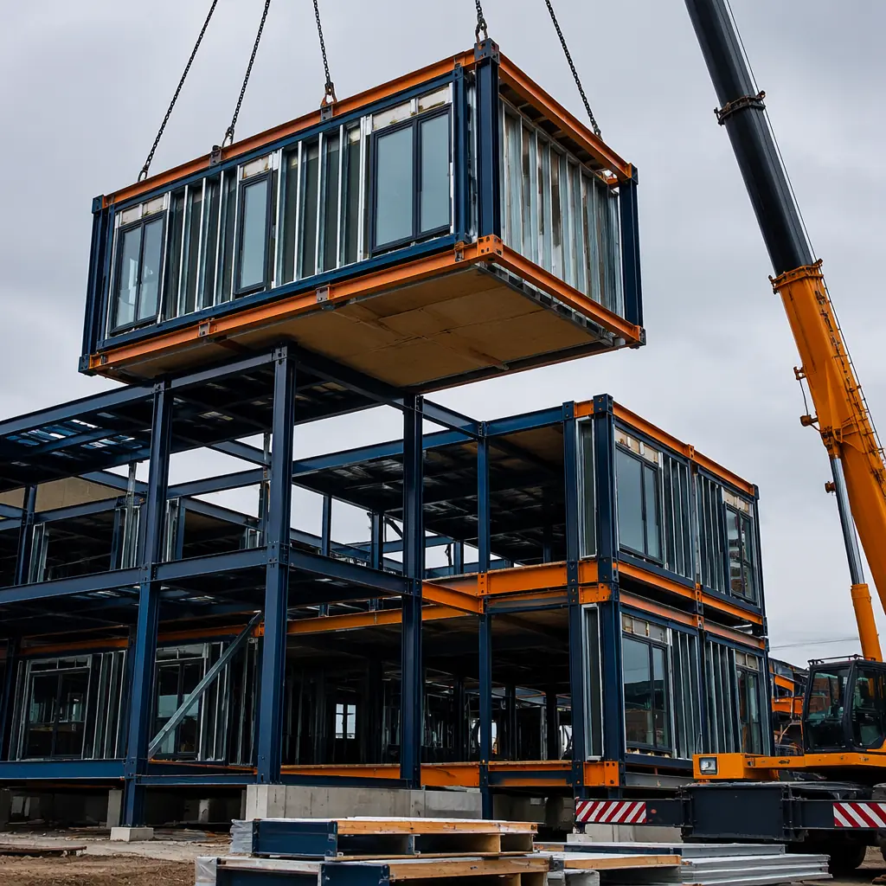
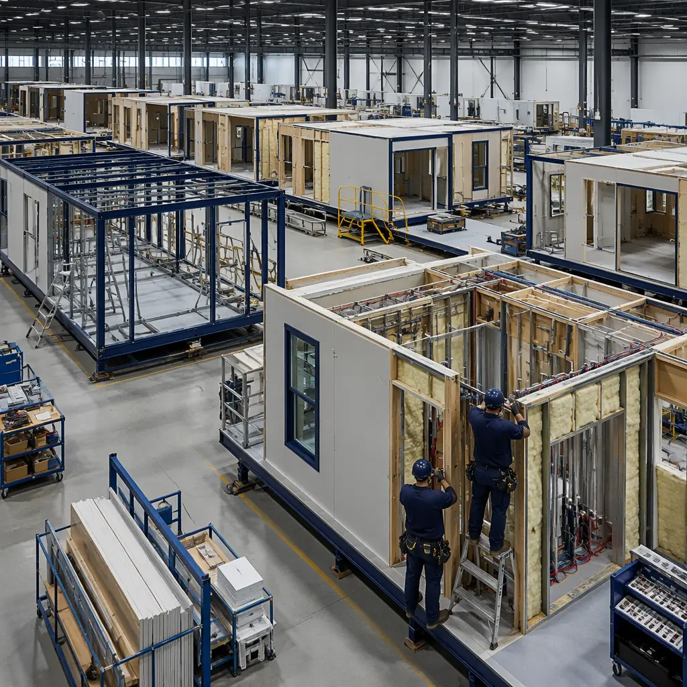
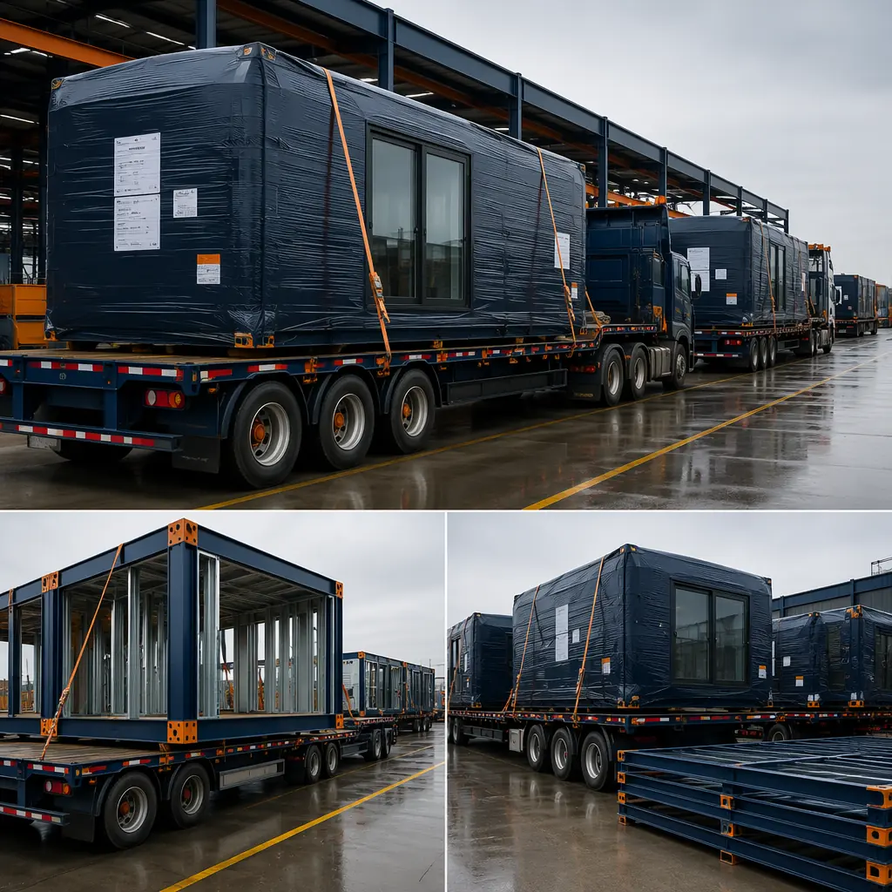
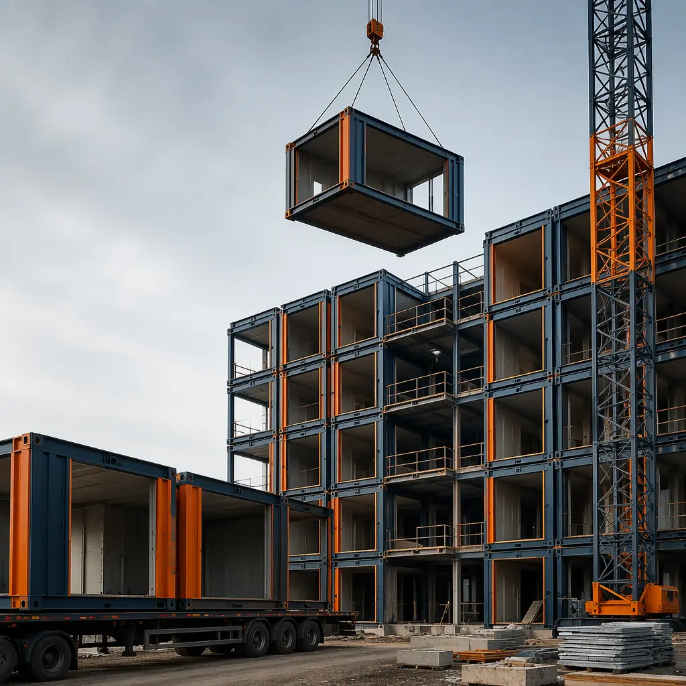
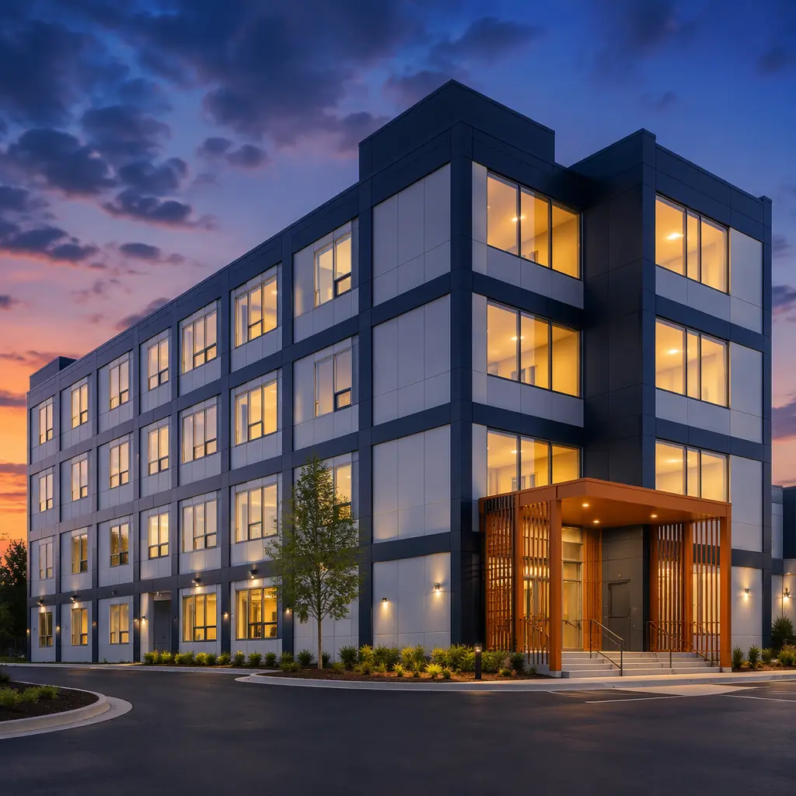

When a developer asks "what does modular construction cost per square foot," they are usually asking the wrong question — or at least an incomplete one. The sticker price per square foot is the most visible number, but it conceals the timeline savings, financing cost reductions, quality premiums, and operational efficiencies that determine whether a project delivers its target IRR. This guide provides real 2026 pricing data — not marketing ranges — drawn from MODURA's portfolio of 500+ completed projects across 18 countries, covering apartments, hotels, offices, and mixed-use buildings from 20,000 to 200,000 square feet.

Modular Construction Cost Per Square Foot — 2026 Price Ranges
Modular construction costs in 2026 fall into three tiers, driven primarily by the complexity of MEP systems and interior finish levels rather than the module shell itself — which is largely standardized across building types. The following ranges reflect turnkey costs including factory fabrication, transportation, on-site assembly, and all MEP connections, but excluding land, site development, and soft costs (permits, professional fees, financing):
| Building Type | Cost per Sq Ft (Turnkey) | Typical Project Range | Finish Level |
|---|---|---|---|
| Mid-Rise Apartments | $180–$260 | 30,000–120,000 sq ft | Standard residential |
| Hotels (Limited Service) | $200–$290 | 25,000–80,000 sq ft | Mid-range hospitality |
| Hotels (Full Service) | $280–$380 | 50,000–150,000 sq ft | Upscale hospitality |
| Commercial Offices | $220–$320 | 20,000–100,000 sq ft | Class A / Class B |
| Mixed-Use (Retail + Residential) | $200–$300 | 40,000–120,000 sq ft | Mixed commercial/residential |
| Student Housing | $170–$240 | 40,000–100,000 sq ft | Efficient residential |
These ranges represent the complete factory-to-foundation cost. The module shell — steel frame, floor deck, wall framing, sheathing, and initial weather barrier — accounts for approximately 50–55% of the total. MEP rough-in (plumbing, electrical, HVAC ducting pre-installed in factory) adds 15–20%. Interior finishes — drywall, flooring, millwork, fixtures — contribute the remaining 25–35%, and this is where costs vary most between building types. A modular apartment with laminate counters, vinyl plank flooring, and standard bathroom fixtures lands at the low end; a full-service hotel with custom millwork, stone surfaces, and high-end lighting lands at the high end.

Modular vs Traditional Construction — The Real Cost Comparison
Comparing modular and traditional construction on per-square-foot sticker price alone is misleading, because the numbers measure different scopes. A traditional $220/sq ft estimate often excludes the general contractor's markup (8–15%), change orders (5–12% of contract value on average), weather delays (3–8 weeks per year in temperate climates), and extended construction financing. A modular $240/sq ft bid typically includes a higher percentage of factory-finished scope with fewer exclusions.
When these variables are normalized into total project cost — the number that actually matters for a developer's pro forma — the comparison shifts. Based on MODURA project data for a representative 60,000 sq ft, four-story building, here is how total project costs compare:
| Cost Component | Traditional Build | Modular Build | Delta |
|---|---|---|---|
| Hard construction cost ($/sq ft) | $220 | $240 | +$1.2M |
| GC markup (10% vs 5%) | $1.32M | $720k | −$600k |
| Change orders (8% vs 2%) | $1.06M | $288k | −$768k |
| Extended construction financing (12 vs 8 months) | $720k | $480k | −$240k |
| Revenue acceleration (4 months early occupancy) | — | −$520k | −$520k |
| Total Project Cost | $16.30M | $15.41M | −$892k (5.5%) |
Modular costs $20/sq ft more on the hard-cost line, but the total project saves $892,000 — 5.5% — when the full picture is considered. This is consistent with the pattern documented in our modular vs traditional construction comparison: the per-square-foot premium for factory-built quality is typically recovered and exceeded by savings in change orders, financing duration, and speed-to-revenue.
The developer who evaluates modular construction on square-foot cost alone is making the same mistake as the homebuyer who picks a house by price per square foot without checking whether the foundation is cracked. The number on the line item is not the number that determines project returns.
What Drives Modular Construction Costs — The 5 Variables
Modular construction is not a commodity with a single price. Five variables account for the majority of cost variation between projects, and understanding them is the difference between an accurate budget and a surprise at contract signing:
- Module Complexity and Repetition. A project with 80 identical hotel room modules costs significantly less per square foot than one with 80 unique apartment layouts. Repetition allows the factory to optimize assembly-line workflows — jigs stay set, crews repeat the same sequence, material waste drops to near-zero. When every module is different, the factory pays a "changeover tax" of approximately 8–12% on labor hours. MODURA's projects with module repeat ratios above 80% consistently land at the low end of the pricing ranges above.
- Transportation Distance. Modules are shipped on flatbed trucks with escort vehicles for oversized loads. Within a 300-mile radius of the factory, transportation costs $3–$6 per square foot. Beyond 500 miles, costs escalate to $8–$14 per square foot as permits, escorts, and driver hours multiply. MODURA's four-factory network provides geographic coverage that keeps most projects within the 300-mile band in North America, Europe, and the Middle East.
- Site Conditions and Crane Access. A flat, cleared site with direct crane access adds minimal cost beyond standard foundation work. A tight urban infill site requiring a larger crane with longer reach, street closures, and after-hours work can add $15–$25 per square foot to the on-site assembly cost. The site preparation cost is similar for traditional and modular construction, but modular requires specific crane positioning that must be accounted for in site logistics planning.
- MEP Density. The cost difference between a residential module with one bathroom and a kitchen and a hotel module with one bathroom is modest — $15–$25 per square foot. The jump from hotel to full-service healthcare with medical gas piping, nurse call systems, and backup power adds $40–$70 per square foot in MEP scope that is installed in the factory. This is the primary reason modular healthcare construction costs more than residential — the factory is doing more work per module, not charging more for the same work.
- Local Labor Market Conditions. The factory portion of modular construction (65–80% of total labor hours) is insulated from local labor market volatility. The on-site portion — foundation, module setting, MEP connections, site utilities — is subject to the same labor market as traditional construction. In markets with severe skilled labor shortages (common in the US Mountain West, parts of Canada, and remote regions), the factory advantage becomes more pronounced because modular shifts labor hours from the constrained site market to the stable factory market.

Hidden Savings — What the Square Foot Price Does Not Tell You
Beyond the direct cost comparison, modular construction generates financial benefits that do not appear on a square-foot price comparison but materially improve project returns. These are the savings that experienced developers factor into their underwriting but first-time modular buyers often overlook:
Reduced Construction Financing Costs. Every month of construction is a month of interest-only payments on the construction loan with no revenue to offset them. At a 7.5% construction loan rate on a $12 million draw, each month of schedule reduction saves approximately $75,000 in interest. When modular construction cuts 4–8 months from the schedule — typical for a mid-rise project — the interest savings alone range from $300,000 to $600,000. For projects using modular construction financing structures that recognize the reduced risk profile of factory-built projects, the rate itself may be 25–50 basis points lower.
Earlier Revenue Generation. A hotel that opens 6 months early generates 6 months of room revenue that a traditional build misses entirely. At $150 ADR and 65% occupancy, a 120-room hotel earns approximately $2.1 million in revenue during those 6 months — revenue that goes straight to the bottom line after covering operating costs. Similarly, an apartment building that begins leasing 4 months early collects 4 months of rent that partially offsets the modular premium. For a 60-unit building at $1,800/month average rent, that is $432,000 in additional Year 1 revenue.
Reduced Weather Risk. Traditional construction in climates with defined winter seasons loses 15–25% of available working days to weather — frozen ground, snow cover, rain delays. Modular construction moves 65–80% of labor hours indoors, shrinking the weather-exposed schedule to foundation work and module setting. The remaining site work can often be scheduled within weather windows, and module setting itself — typically 2–4 weeks for a mid-rise building — is far less weather-sensitive than months of framing, sheathing, and roofing on an open site. Comparing construction timelines, modular hotels typically cut 40–60% from the schedule in part because weather stops being a dominant constraint.
Fewer Change Orders. The Construction Industry Institute reports that change orders average 8–14% of contract value on traditional commercial construction projects. On modular projects, the design-freeze date occurs earlier — before modules enter production — which forces resolution of design conflicts during the planning phase rather than during construction. MODURA's change order rate across 500+ projects averages 1.8% of contract value. At $14.4 million contract value (the 60,000 sq ft example above), the difference between 10% and 2% change orders is $1.15 million.
These four hidden savings — financing, early revenue, weather avoidance, and change order reduction — collectively contribute more to project profitability than the $20–$40 per-square-foot difference in hard costs. This is why modular construction ROI calculations that use total project cost consistently favor modular, even when the per-square-foot line appears more expensive.

When Modular Costs More — And When It Costs Less
Modular construction is not universally cheaper or universally more expensive than traditional construction. The cost outcome depends on the project's characteristics, and recognizing which profile a project fits is essential for accurate budgeting:
When modular costs less (total project cost):
- High module repetition — hotels, student housing, senior living facilities with standardized unit layouts. The factory efficiency of repeating the same module design 40–120 times drives per-unit costs down 10–18% compared to one-off traditional construction.
- Tight urban sites — where traditional construction requires extended lane closures, limited material staging, and premium labor rates. Modular shifts most work to the factory, reducing on-site activity to weeks instead of months.
- Labor-constrained markets — regions where skilled construction labor is scarce, expensive, or inconsistent. The factory workforce is stable, trained on repetitive tasks, and unaffected by local labor shortages.
- Accelerated schedules — when time-to-market carries a premium (hotels before tourist season, student housing before fall semester, retail before holiday shopping). The revenue acceleration from modular's 40–60% schedule compression often dwarfs any per-square-foot premium.
When modular costs more:
- One-off custom designs with zero repetition — a single, architecturally unique building where every module is different. The factory cannot amortize setup costs across identical units, and the changeover penalty erodes the cost advantage.
- Remote sites beyond 500 miles from the nearest factory. Transportation costs for oversized loads with escorts can consume the factory savings. For these projects, MODURA typically recommends a hybrid approach: factory-built modules for the standardized portions, site-built for the rest.
- Very small projects (under 10,000 sq ft) where the fixed costs of crane mobilization, transportation logistics, and factory setup are spread across too few modules. The per-square-foot premium typically exceeds the schedule savings for projects this small.
- Projects in jurisdictions with restrictive modular codes that require extensive third-party inspections at both the factory and the site, effectively duplicating the approval process. MODURA's experience across 18 countries has identified which jurisdictions have streamlined modular pathways and which impose double-regulation — this alone can swing costs by $8–$15 per square foot.
Modular construction is not a cost strategy — it is a time, quality, and predictability strategy that happens to have favorable cost implications for the right project profile. The developer who approaches it as a way to save 10% on hard costs will be disappointed. The developer who approaches it as a way to open 6 months earlier with fewer surprises will find the economics compelling.
How to Get an Accurate Modular Cost Estimate
The most expensive mistake a developer can make is pricing modular construction using a rule-of-thumb square-foot number without engaging a modular manufacturer early in the design process. Modular projects designed without factory input typically include features that are easy to build on-site but expensive to build in a factory — and vice versa. When a modular manufacturer is brought in during schematic design (rather than after construction documents are complete), the design can be optimized for factory production, typically reducing costs by 8–15% compared to a "modular-adapted" traditional design.
At MODURA, our engineering team provides preliminary budget pricing based on concept drawings, with detailed line-item estimates within 14 business days of receiving architectural plans. The estimate covers factory fabrication, transportation, on-site assembly, MEP connections, and a project-specific schedule with milestone dates. For developers evaluating modular for the first time, we recommend requesting a budget for both modular and traditional construction to compare total project cost — not just per-square-foot hard costs — before making a final decision.
